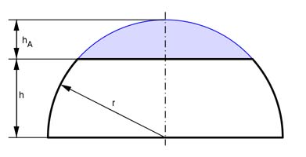

Aufgabe 334 Bei einer Kugelzone mit einer Höhe h von 2 cm und einer Fläche M von 30 cm² entspricht der große Durchmesser dem Durchmesser der dazugehörigen Kugel. Wie groß ist das Volumen V der zur Zone gehörenden Schicht?  M = 2 * л * r * h | : 2 * л * h M 30 cm² r = ----------- = ---------------- = 2,39 cm 2 * л * h 2 * л * 2 cm Volumen: Kugelschicht = Halbkugel - Kugelabschnitt(-segment) Höhe hA des Kugelabschnitts = 2,39 cm - 2 cm = 0,39 cm Durchmesser d der Halbkugel = 2 * 2,39 cm = 4,78 cm d³ * л л * hA² V = --------- - --------- * (3 * r - hA) 12 3 4,78³ * л л * 0,39² V = ------------ - ----------- * (3 * 2,39 - 0,39) cm³ 12 3 V = 28,6 cm³ - 1,08 cm³ = 27,5 cm³